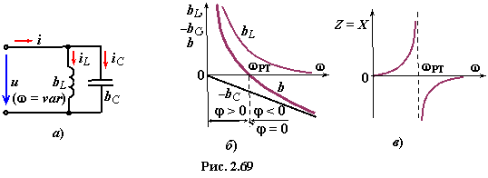
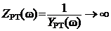
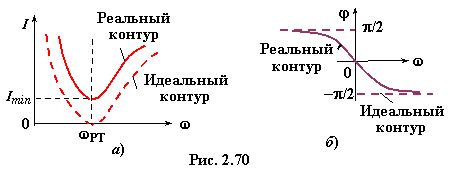
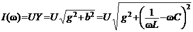
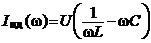
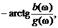

Частотные характеристики проводимостей ветвей , и полной проводимости идеального резонансного контура (R1 = R2 = 0, рис. 2.69а) представлены на рис. 2.69б.

Для режима резонанса токов полная проводимость идеального контура YРT(ω) −&$8722;> 0, при этом полное входное сопротивление контура (рис. 2.69в)

Амплитудно-частотные характеристики тока на входе реального (рис. 2.68а) и идеального (рис. 2.69а) параллельных контуров
,

и их фазочастотные характеристики
φ(ω) =φид(ω) = ± 90°
представлены на рис. 2.70а, б.
Ток на входе контура при РТ (bL − bC = 0)
,(2.114)
так как полная проводимость контура при РТ минимальна:Ymin = YPT = gPT (сопротивление контура при РТ максимальное:). Сопротивление
идеального контура Z −−> ∞ и ток IPT −−> 0 (рис. 2.70а).